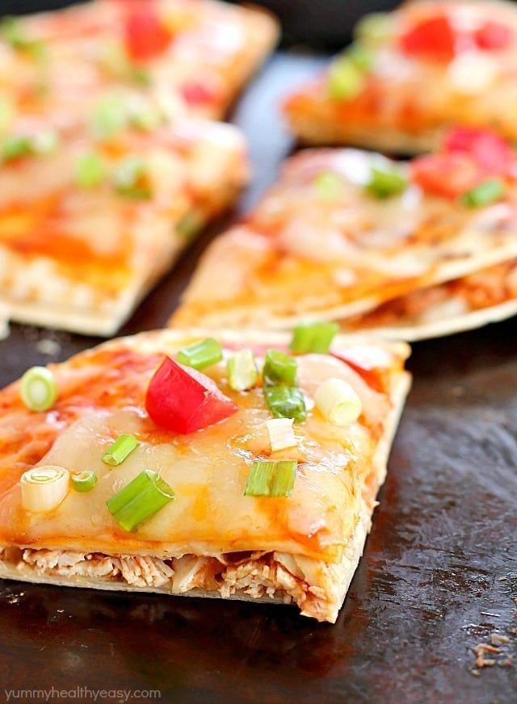

Mexican Pizza

Description
A crust of flour tortillas and a filling of refried beans, shredded rotisserie chicken and salsa. Top it off
with a little enchilada sauce and cheese and you got yourself an incredible Mexican Pizza for dinner!
Ingredients
- 1 16 oz can low-fat refried beans (you may not need the entire can)< /li>
- 2 cups shredded rotisserie chicken
- 1/2 cup salsa< /li>
- vegetable oil or cooking spray
- 8 flour tortillas fajita or taco size
- 1 10 oz can red enchilada sauce (you will only need about half a can)< /li>
- 8 ounces shredded Mexican blend cheese
- 2 green onions thinly sliced
2 Roma tomatoes diced
Instructions
- Preheat oven to 350ºF.
- Warm up beans in a small bowl in the microwave. Combine chicken and salsa in another bowl and warm it up in
the microwave.
- To toast the tortillas, either heat oil in a skillet and fry both sides of the tortilla, or spray both sides
of tortilla with cooking spray and heat on skillet (my preferred method).
- Lay four of the toasted tortillas on a large baking sheet. Spread with about 2 tablespoons of refried beans
on each tortilla. Top with the salsa/chicken mixture, evenly dividing it among the four tortillas. Top with
another toasted tortilla.
- Spread a thin layer of enchilada sauce on the top of each tortilla. Sprinkle with shredded cheese, evenly
dividing it among the four pizzas. Bake in preheated oven for 5-7 minutes, or until the cheese is melted.<
/li>
- Cut into triangles and serve immediately. Enjoy!< /li>
Home